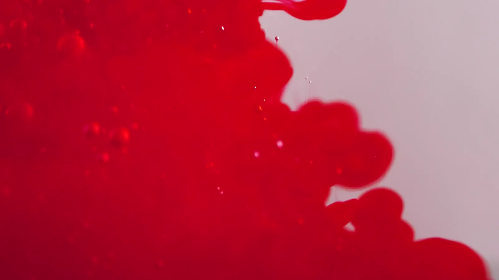

01 / 05The drop
One drop
is enough
No.7 is milled three times, so a single drop blooms through the water instead of sinking like a stone.

One drop of No.7 in clear water. Keep scrolling and watch it take over the glass.
No.7 is milled three times, so a single drop blooms through the water instead of sinking like a stone.
Dense enough to stay red on cheap copy paper. Clean enough that it never clogs a nib.
Watch the edges: soft, slow, unhurried. That is the flow you feel under the pen.
A satin finish that sets fast enough for left-handers and keeps a hint of sheen when it catches the light.
One colour, made properly.
The bottle
Every number below is a spec of the concept ink, not a claim about a real product. The page around it is generated from one config file and one video.
Video flow
The bloom is real footage, cut into 180 webp frames and drawn to a canvas as you scroll. Tap any frame to scrub back to it.
No.7 Carmine
A concept bottle for a fictional ink house. Nothing is for sale; the red is real.
Zyqor Lab concept. Fictional brand, real footage.